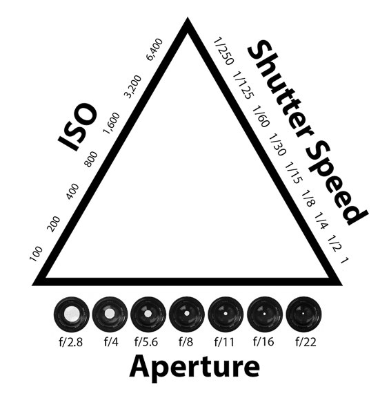

Exposure
The right exposure depends on a couple of things. Firstly and most importantly is the amount of light available. But even with enough light, you need to set up the camera right. Two factors are the white balance (a color calibration) and the ISO number (the light sensitivity of the sensor). For WB it is a matter of knowing your light source unless your camera has a manual WB option. Most cameras will have a few different ones to choose from.
The ISO is generally something you’d try to keep as low as possible. The lower the ISO the sharper the image, but it’ll take more light. In lower light you can raise the ISO but at a certain point you’ll start to introduce noise artifacts in the image. Most cameras will go from 100 ISO to way above 10000. Modern digital cameras can go even higher than that, though severely damaging image quality doing so. The other important factors is getting the right exposure is the aperture and shutter speed. These in fact rely very much on each other as well as on the ISO number so that photographers will talk about the exposure triangle as a way to work out a setting and how much you can tweak them for specific purposes.
The exposure triangle
To understand it, it is important to understand that f-stops, ISO and shutter speeds on a camera traditionally come in double/half steps. ISO numbers are easy. They start at 100 and the following are 200, 400, 800, 1600 etc. The shutter speed is almost as easy to understand. 1/60 means a sixtieth of a second exposure time and the next speed would be either 1/30 as the slower one and 1/120 as the faster. F-stops actually are the same even though their numbers are a bit less obvious. Their line is f/1.4, f/2.8, f/4, f/5.6, f/8, f/11, f/16 and f/22. In the exposure triangle these three factors are set up as a perfect triangle. If a perfect exposure f.ex. Is 200 ISO, f/5.6 and a shutter speed of 1/120, you can easily calculate the right adjustments if you change any of these numbers. Just as in a triangle, the sum of the three angles will always stay the same - sum must the exposures add up. If you increase one angle in a triangle, the sum of the other two will have to decrease. If you decrease an angle, the sum of the others must increase. In exposure settings it is likewise. Let’s say you decide that the aperture has to go up (smaller number) because you want a narrow depth of field (unfocused background), you would have to increase either the ISO value or the shutter time. Let’s say we start at f/5.6 and want to decrease to f/2. That is two whole stops. We therefore need to either raise the ISO from 200 to 800 or the shutter speed from 1/120 to 1/30. This makes sense because decreasing the aperture let’s less light through the lens and we then need more light from the other parameters. But a shutter speed of 1/30 and an ISO of 800 might be undesirable, so instead if increasing one of them by two full stops, we’d increase both by one - thus achieving a similar end result.
